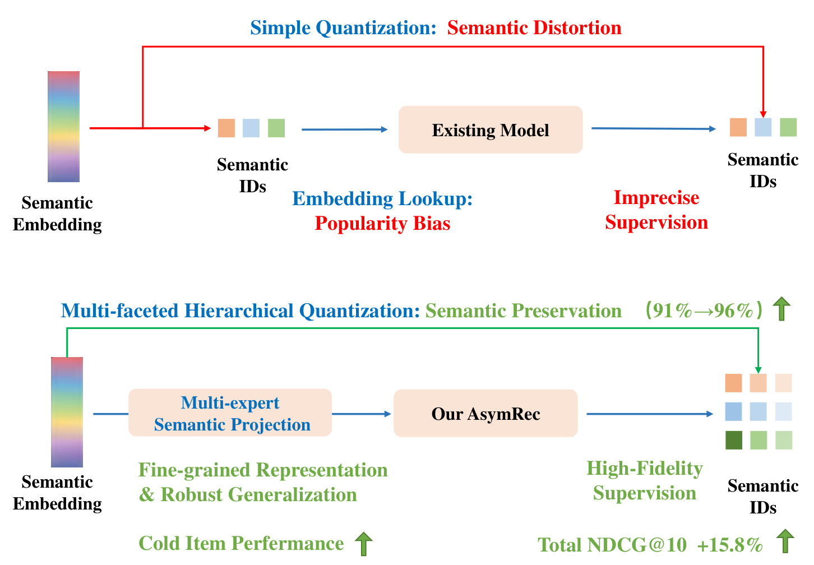
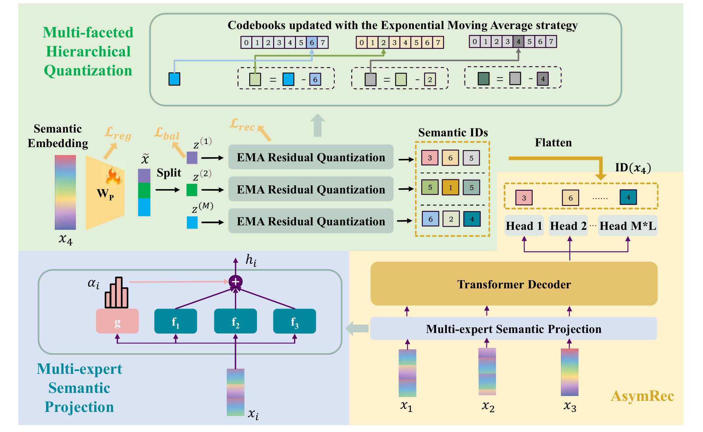
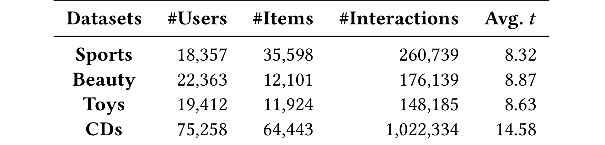
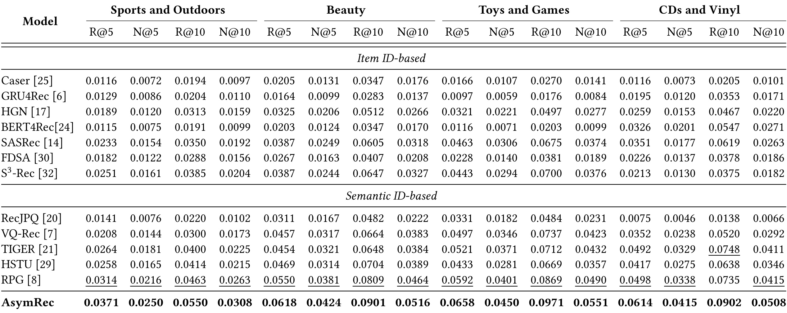
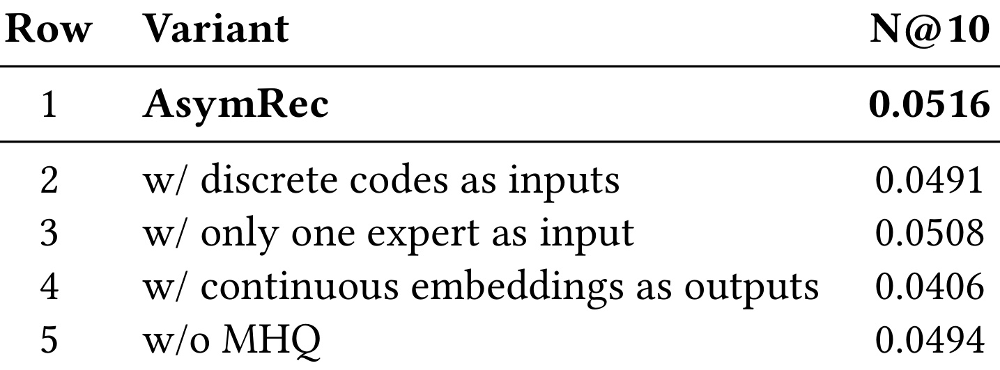
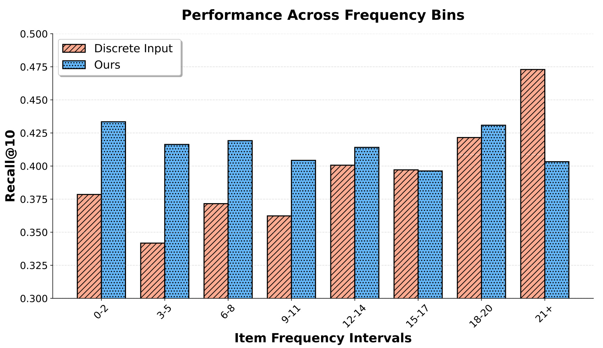
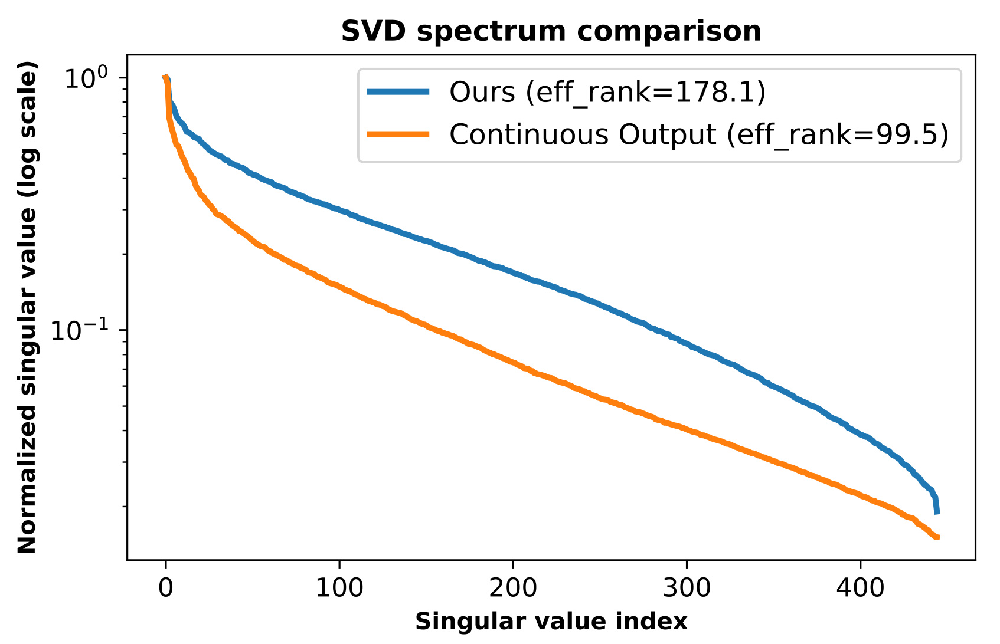
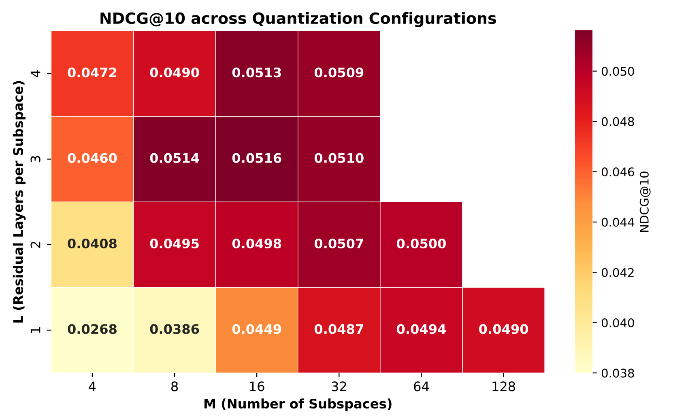

AsymRec：Asymmetric Generative Recommendation via Multi-Expert Projection and Multi-Faceted Hierarchical Quantization
这里精读清华大学 DCST 与腾讯合作的生成式推荐论文《Asymmetric Generative Recommendation via Multi-Expert Projection and Multi-Faceted Hierarchical Quantization》，中文可称为《AsymRec：通过多专家投影和多面分层量化实现非对称生成式推荐》。论文入口是 arXiv:2605.14512，arXiv v1 日期为 2026-05-14；一作主机构为 Tsinghua University，合作机构包括 Tencent。代码/项目页状态：论文摘要写明 code will be released，本轮未核验到已经公开的独立代码仓库。阅读重点不是“又换一种 semantic ID tokenizer”，而是它把生成式推荐里输入表示和输出监督拆成两个不同问题：输入侧用连续语义投影保留细粒度语义，输出侧仍用高容量离散目标避免连续回归坍缩。
1. 背景和问题
生成式推荐近两年的主线，是把推荐从“对固定 item corpus 打分排序”改写成“像语言模型一样生成目标 item 的 token 序列”。在 TIGER、RPG、VQ-Rec 这类方法里，item 不再只是随机 ID，而是先由文本、图像或多模态 encoder 得到连续语义向量，再通过 RQ-VAE、PQ 或其他向量量化方法离散化为 Semantic ID。用户历史序列也就从 $[I_1,I_2,\ldots,I_T]$ 变成一串离散 semantic token，Transformer 根据这些 token 自回归预测下一个 item 的 Semantic ID。这个范式有两个吸引人的地方：一是 token 序列天然适合 autoregressive decoder；二是 Semantic ID 理论上能把 item 内容相似性带进推荐模型，缓解随机 ID 对冷启动和长尾泛化的限制。
但 AsymRec 指出的关键问题是：现有 GenRec 常把同一套离散化结果同时用于输入和输出，这种“对称”设计过于省事。输入侧，历史 item 的 Semantic ID 先查表得到 token embedding，再送入 Transformer；输出侧，模型也被训练去预测同一套 quantizer 产生的 token。这样做把连续语义空间压缩成离散码后，就默认这套码既适合作为用户历史的输入表示，又适合作为监督目标。论文认为这里存在 dual-stage information bottleneck：输入瓶颈负责语义失真和热门偏置，输出瓶颈负责监督不精确。
输入瓶颈有两个层次。第一层是 quantization 本身有损。一个 item 的原始语义向量可能包含品牌、类别、风格、价格段、功能、视觉属性和消费场景等多个因素，RQ 或 PQ 把它压成有限长度、有限码本的 token 序列，必然丢掉部分细粒度差异。如果后续模型只看到离散 ID，就没有机会恢复这些差异。第二层是 ID embedding 的训练频率不均。热门 item 的 token 在训练集中出现更多，对应 embedding 会被更新得更充分；长尾 item 的 token 更新少，即使它们在原始语义空间中接近热门 item，也可能因为离散 embedding 学得不充分而泛化不足。这一点对推荐系统很关键，因为长尾 item 不是噪声，很多垂类、冷启动商品和新内容都依赖语义邻近迁移。
输出瓶颈则来自监督信号。模型预测的目标是 quantizer 生成的离散码，如果 quantizer 重构误差较大，或者存在不同 item 的 code collision / code proximity，模型即使完全学会这些 token，也不一定学会精确区分真实 item。一个直接想法是干脆让 decoder 预测连续 item embedding，绕开离散目标。但论文强调这会带来另一个问题：连续输出回归容易出现 representation collapse，模型倾向于预测均值化、低秩的向量分布，最终难以在大规模 item 集合中做精细区分。因此，输出侧并不是“离散不好所以全连续”，而是需要更高保真、更高容量、更结构化的离散监督。

Figure 1 把论文问题压缩成一张对比图。上半部分是既有生成式推荐的对称量化链路：semantic embedding 被简单量化为 Semantic IDs，输入端通过 embedding lookup 重新学习 token embedding，输出端继续预测这些离散 ID。图中标出的 “Semantic Distortion”“Popularity Bias”“Imprecise Supervision” 对应三个风险：语义细节先被压缩，训练频率再把表示推向热门 item，最后模型学习的目标又只是粗糙离散码。下半部分是 AsymRec 的非对称路线：输入端不再从 Semantic ID lookup 开始，而是通过 Multi-expert Semantic Projection 直接把连续 embedding 映射到 Transformer hidden space；输出端仍然预测 Semantic IDs，但这些 IDs 来自 Multi-faceted Hierarchical Quantization，目标是提升语义保真度。图里 “91% to 96%” 和 “Total NDCG@10 +15.8%” 是论文用来概括量化保真和推荐效果提升的主张，真正值得注意的是设计方向：输入要保连续拓扑，输出要保可分类、可约束、可解码的结构化目标。
这篇论文和近期生成式推荐 tokenizer 工作的区别，也在这个“非对称”视角。很多论文只问“怎样给 item 编更好的 Semantic ID”，例如更长、更短、更分层、更跨模态或更少碰撞；AsymRec 问的是“输入表示和输出监督是否应该共用同一套离散码”。如果把输入和输出拆开，设计空间会更清楚：输入侧更像 representation learning 和 feature projection，追求语义连续性、邻域保持和长尾迁移；输出侧更像 discrete supervision / constrained decoding，追求分类边界、可枚举候选和生成合法性。两边目标不同，强行共用同一机制会让 tokenizer 同时背负互相冲突的要求。
从工业推荐角度看，这个问题很现实。线上大模型推荐或广告系统往往已经有高质量的内容 embedding、多模态 embedding 或跨域 latent factor embedding。如果为了接入生成式推荐，就先把这些连续特征压成 Semantic ID，再只用 ID embedding 作为输入，等于丢掉了原有 embedding 里最细的部分。另一方面，线上召回/排序仍需要可控的候选空间、合法 ID 约束和低延迟检索，纯连续生成又不容易直接替代离散 item 预测。AsymRec 提出的方案因此不是只服务学术 benchmark，而是贴近一个工程判断：输入侧保留连续向量，输出侧保留离散目标，中间用 Transformer 连接。
这也是为什么论文会把贡献拆成 MSP 和 MHQ 两部分。MSP 解决“历史 item 如何进入模型”这一侧，MHQ 解决“下一 item 以什么目标被监督”这一侧。前者关心输入拓扑和热门偏置，后者关心量化容量、子空间均衡、残差层级和输出坍缩。把这两件事分开后，实验也能分别回答四个问题：AsymRec 是否总体优于 SOTA；连续输入是否真的改善长尾泛化；为什么不能把输出也做成连续回归；MHQ 是否比标准 PQ/RQ 更适合作为监督目标。
2. 方法
2.1 非对称连续-离散框架
AsymRec 的整体框架可以先从一句话理解：历史 item 的输入表示走连续路径，目标 item 的监督表示走离散路径。给定用户交互序列 $S_u=[I_1,I_2,\ldots,I_T]$，每个 item $I_i$ 都有一个连续语义 embedding $x_i\in \mathbb{R}^d$。传统 GenRec 通常先把 $x_i$ 量化为 $\mathrm{ID}(x_i)$，再把 $\mathrm{ID}(x_i)$ 里的 token 查表成模型输入。AsymRec 则把输入改成
这里 $h_i$ 是送入 Transformer decoder 的 item 表示，$\mathrm{MSP}$ 是 Multi-expert Semantic Projection。也就是说，输入路径不再依赖 $\mathrm{ID}(x_i)$ 的 embedding lookup，而是直接从原始连续 embedding 出发。这样做保留了 item embedding 空间中的邻近关系：如果两个 item 在原始多模态/文本语义空间中相近，它们的输入表示也更有机会保持相近，而不是被有限 codebook 切到不同 token 后再重新学习。
输出路径仍然预测离散 Semantic IDs。目标 item $x_{T+1}$ 会通过 MHQ 生成一个结构化离散码 $\mathrm{ID}(x_{T+1})$，Transformer 最后一层隐藏状态通过 $M\times L$ 个 prediction heads 分别预测每个子空间、每个残差层的 code index。这样训练目标仍是分类交叉熵，推理时仍可以用 graph-constrained decoding 保证生成的 codeword 合法，避免连续向量回归后还要做最近邻检索和阈值校准。

Figure 2 展示了完整的数据流。左上角的 MHQ 从 semantic embedding 进入，先通过 $W_P$ 投影和 split 得到多个子空间，再在每个子空间内做 EMA Residual Quantization，最后 flatten 成多头预测目标。左下角的 MSP 从同一个连续 embedding $x_i$ 出发，通过 gating network 给多个 expert 分配权重，得到输入表示 $h_i$。右侧 Transformer Decoder 接收 MSP 产生的历史 item 表示，输出端不预测一个整体 item ID，而是通过 Head 1 到 Head $M\times L$ 预测结构化 Semantic IDs。图中最重要的不是模块数量，而是两个方向的语义边界：输入不经过离散码，输出不做连续回归。这个边界决定了后面所有公式的角色：MSP 公式服务输入拓扑保持，MHQ 公式服务离散监督质量，cross-entropy 公式服务下一 item 的多头 code prediction。
2.2 Multi-expert Semantic Projection：输入侧保连续拓扑
MSP 的基本结构是一个轻量 Mixture-of-Experts。给定 item embedding $x_i$，模型有 $E$ 个 expert function $\{f_e(\cdot)\}_{e=1}^E$，每个 expert 是一个两层 MLP，用来捕捉 item 语义中的不同侧面；同时有一个 gating network $g(\cdot)$ 产生动态权重 $\alpha_{i,e}$。论文把映射写成：
这个公式说明 MSP 不是简单线性投影，而是“按 item 自适应混合多个语义投影”。如果一个商品的关键区分因素主要来自类别，某个 expert 可以承担类别侧投影；如果另一个 item 的关键因素来自风格、品牌或视觉属性，gating 可以提高其他 expert 的权重。论文没有声称这些 expert 会自动对应可解释的人类概念，但从建模意图上，它避免了单一路径把所有语义因素压到一个 projection 中。
MSP 和 ID lookup 的差异需要从训练信号看。ID lookup 的输入是离散 token，token embedding 由推荐训练任务更新。热门 token 出现频次高，embedding 会更稳定；冷门 token 更新少，很容易停留在欠训练状态。MSP 的输入是原始连续 embedding，参数是共享的 MLP 和 gating network。即使某个 item 出现很少，只要它的 $x_i$ 与其他 item 有相似结构，MSP 仍可以通过共享投影把语义邻域迁移过来。因此 MSP 不是单纯“多几个 expert 提升容量”，而是把 item-specific lookup 改成 embedding-conditioned shared mapping，减少热门 item 在输入表示上的更新优势。
论文在消融里也证明，多专家结构不是全部收益来源。把输入换成连续 embedding 后，即使只有一个更宽的 expert，也明显优于离散输入；多 expert 在此基础上继续带来小幅提升。这个结果意味着 AsymRec 的首要贡献是 asymmetric continuous input，而不是 MoE 结构本身。MoE 的价值在于给不同语义面提供额外自由度，使连续输入更容易分解成若干互补投影；但如果只看提升幅度，避免离散 input bottleneck 才是更大的因素。
2.3 Multi-faceted Hierarchical Quantization：输出侧构造高保真离散目标
输出侧的问题更复杂。论文不选择连续回归，而是提出 MHQ，把 PQ 的多子空间思想和 RQ 的层级残差思想结合起来。给定语义 embedding $x\in\mathbb{R}^d$，MHQ 先通过可学习投影矩阵 $W_P\in\mathbb{R}^{D\times d}$ 得到
随后把 $\tilde{x}$ 切分为 $M$ 个不重叠子空间：
其中 $d_m=D/M$。这一步对应 “multi-faceted”：不同子空间希望捕捉不同语义面。与标准 RQ 沿单一路径逐层量化不同，MHQ 先做横向分解，让品牌、类别、风格、功能等潜在因素有机会分布到不同子空间；与标准 PQ 只做每个子空间一次量化不同，MHQ 在每个子空间内继续做多层残差量化，保留由粗到细的层级细节。
在第 $m$ 个子空间内，MHQ 有深度 $L$ 的残差量化过程。第 $l$ 层维护 codebook
量化器在当前 residual $r_l^{(m)}$ 上选择最近的 codeword：
第一层残差为 $r_1^{(m)}=z^{(m)}$，后续层残差按
更新。第 $m$ 个子空间的重构为
最终一个 item 的离散目标就是所有子空间和层级索引的扁平序列：
这个结构的容量来自两个维度。$M$ 控制横向 facet 数量，让不同语义面分开表达；$L$ 控制每个 facet 内的残差深度，让每个子空间有由粗到细的细化能力。相比单一路径 RQ，MHQ 不要求所有语义因素都挤进一个 residual chain；相比一次性 PQ，MHQ 又能在每个子空间内逐层补偿残差。论文后面的 Figure 5 正是围绕 $M$ 和 $L$ 的配比展开。
符号解释上，$x$ 是原始 item 语义向量，通常来自文本或多模态 encoder；$\tilde{x}$ 是经过 $W_P$ 重组后的量化前 latent；$z^{(m)}$ 是第 $m$ 个语义子空间；$K$ 是每个 codebook 的大小；$i_{m,l}$ 是第 $m$ 个子空间第 $l$ 层选中的 code index。这个索引既是 MHQ 的量化结果，也是后续 Transformer 需要预测的分类标签。因此，MHQ 不是只生成一个压缩向量，而是在定义推荐模型输出端的监督坐标系。
2.4 EMA codebook 更新和 MHQ 的三个损失
MHQ 没有直接用标准反向传播更新 codebook，而是采用 Exponential Moving Average。对第 $(m,l)$ 个 codebook 中的 centroid $c_k^{(m,l)}$，论文维护计数 $N_k^{(m,l)}$ 和累积 residual $m_k^{(m,l)}$：
EMA 的意义是让离散 codebook 更新更平滑，避免每个 batch 的 hard assignment 让 centroid 大幅抖动。对推荐数据来说，item 分布长尾且 batch 内类别覆盖有限，直接梯度更新可能让少数高频区域主导 codebook；EMA 至少在更新上引入时间平滑，使 codebook 更稳定。
MHQ 的训练目标由三部分组成。第一是重构损失：
它要求量化后的多子空间重构接近投影后的连续向量，是高保真离散目标的基础。第二是 subspace energy balance。论文先定义平均能量：
再定义均衡损失：
这个项防止信息集中到少数几个子空间。如果没有它，模型可能把大部分语义能量塞进几个维度，其他子空间虽然存在但接近空转，最终 nominal capacity 很高，effective capacity 却不高。第三是投影矩阵正交正则：
它减少不同子空间之间的冗余和相关性，让 $W_P$ 更接近把原始 embedding 组织成互补方向，而不是把同一信息复制到多个子空间。总的 MHQ 训练损失为：
需要注意，论文明确说这个损失只用于 MHQ 的训练，不用于后续推荐模型训练。也就是说，MHQ 先作为 tokenizer / target builder 学出离散目标，之后每个 item 被分配 $\mathrm{ID}(x_i)$，推荐模型训练时主要面对的是预测这些结构化 ID 的 cross-entropy。
2.5 Transformer 解码、训练目标和推理约束
完成 MSP 和 MHQ 后，AsymRec 的推荐模型就比较直接。对用户历史 $[x_1,x_2,\ldots,x_T]$，每个 item 先得到 $h_i=\mathrm{MSP}(x_i)$，然后加上位置编码：
序列进入 $L_T$ 层 Transformer decoder：
从最后一层取最后一个 item 的 hidden state $H_T^{L_T}$，用 $M\times L$ 个并行 prediction heads 预测目标 item $\mathrm{ID}(x_{T+1})$ 的每一个 code index。每个 head 是两层 MLP，输出一个 $K$ 类分布。训练目标是所有 heads 的平均交叉熵：
这个目标把下一 item 的预测拆成 $M\times L$ 个分类问题。它和直接预测 item ID 的差异在于：多个 code head 可以共享结构化语义，模型不必在一个巨大 item vocabulary 上直接分类；它和连续向量回归的差异在于：每个 head 都是离散分类，保留了明确决策边界，并且能配合合法 codeword 约束。
符号解释上，$H_0$ 是加入位置编码后的历史 item 表示序列，$H_i$ 是第 $i$ 层 decoder 的输出，$H_T^{L_T}$ 是最后位置、最后层的用户当前兴趣表示，$i_{m,l}^{T+1}$ 是目标 item 在 MHQ 坐标系中对应的第 $(m,l)$ 个 code index。$\mathcal{L}_{CE}$ 对所有 heads 平均，是为了避免某个 facet 或某个层级主导训练；如果某些 head 长期更容易，实际复现时还可以监控 per-head loss，判断 MHQ 是否存在子空间利用不均或层级难度不匹配。
推理时，论文使用 graph-constrained decoding，确保生成的 codeword 是有效 item 的 code。这个细节在生成式推荐中很重要，因为如果 $M\times L$ 个 head 独立取 argmax，组合出来的 code 序列可能不存在对应 item，或者对应多个冲突 item。约束解码相当于在已知 item-code 图上搜索合法路径，把 generative prediction 重新接回 item catalogue。AsymRec 因此没有把推荐问题完全变成自由文本生成，而是在 semantic ID 空间中做受约束生成。
2.6 为什么不是全连续：方法层面的取舍
AsymRec 的设计有一个容易误解的点：既然输入侧连续 embedding 更好，为什么输出侧不也直接预测连续 embedding？论文给出的答案是，输出侧连续回归会削弱表示维度和分类边界。推荐模型如果用 MSE 或相似度目标去拟合目标 item embedding，容易学到“平均化”的向量：它在整体距离上看似合理，但对相近 item 的精确区分能力不足。生成式推荐需要的是在大 catalogue 中区分候选，而不是只恢复一个语义上大致相近的点。
从优化角度看，离散监督有两个额外好处。第一，它把每个子空间和层级都变成明确分类任务，梯度来自类别边界，而不只是向量距离。第二，它允许模型在输出端保持更高 effective rank，因为不同 code head 强迫 hidden state 同时服务多个离散判别。论文的 Figure 4 用 SVD spectrum 支持这一点：连续输出的奇异值衰减更快，effective rank 更低；AsymRec 的离散输出保持更平坦的谱，说明表示没有那么快坍到低维流形。
所以 AsymRec 的非对称性不是折中，而是把两侧目标区分清楚。输入侧的连续空间是“信息入口”，最怕早期量化丢细节；输出侧的离散空间是“监督和解码接口”，最怕连续回归没有可分辨边界。MSP 与 MHQ 分别对应这两个目标。
3. 实验结果
3.1 实验设置
论文在 Amazon Review benchmark 的四个常用类别上做离线实验：Sports and Outdoors、Beauty、Toys and Games、CDs and Vinyl。按照 sequential recommendation 的常见设置，最后一个 item 用于测试，倒数第二个用于验证，其余作为训练。指标是 Recall@$K$ 和 NDCG@$K$，$K\in\{5,10\}$。baseline 分成两类：Item ID-based 包括 Caser、GRU4Rec、HGN、BERT4Rec、SASRec、FDSA、S3-Rec；Semantic ID-based 包括 RecJPQ、VQ-Rec、TIGER、HSTU、RPG。

Table 1 给出四个数据集规模。Sports 有 18,357 个用户、35,598 个 item、260,739 条交互，平均序列长度 8.32；Beauty 有 22,363 个用户、12,101 个 item、176,139 条交互，平均 8.87；Toys 有 19,412 个用户、11,924 个 item、148,185 条交互，平均 8.63；CDs 最大，有 75,258 个用户、64,443 个 item、1,022,334 条交互，平均序列长度 14.58。这个表值得保留，因为它说明 AsymRec 不是只在小 catalogue 上验证；CDs 的 item 数和交互数都明显更大，能更好检验 structured semantic ID 在大候选空间中的效果。另一方面，四个数据集平均序列都不算很长，说明实验更接近日常电商序列推荐，而不是长上下文 session 建模。
实现细节上，论文使用文本 embedding 作为 item semantic embedding，维度 $d=3072$。MHQ 训练时设置 quantized latent dimension $D=1024$，codebook size $K=256$，子空间数 $M=16$，每个子空间残差层数 $L=3$；MSP 使用 $E=3$ 个 experts；Transformer decoder 有 $L_T=2$ 层。训练硬件是 NVIDIA GeForce RTX 3090，论文称每次 Beauty 数据集评估可在一小时内完成。这个开销描述说明方法不是只靠极大模型堆出来，核心复杂度主要在 tokenizer 结构和多头预测。
3.2 主结果：四个数据集上稳定超过现有生成式推荐

Table 2 是论文最核心的离线证据。AsymRec 在四个数据集、四个指标上都取得最优。以 NDCG@10 看，Sports 上 AsymRec 为 0.0308，强于 RPG 的 0.0263；Beauty 上为 0.0516，强于 RPG 的 0.0464；Toys 上为 0.0551，强于 RPG 的 0.0490；CDs 上为 0.0508，强于 RPG 的 0.0415。Recall@10 也同样提升：Sports 0.0550、Beauty 0.0901、Toys 0.0971、CDs 0.0902。论文摘要概括为平均 NDCG@10 提升 15.8%。从表格结构看，AsymRec 不只是比传统 Item ID-based 模型强，也超过了 TIGER、VQ-Rec、RPG 等 Semantic ID-based 生成式推荐方法，这支持“改进 tokenizer 和输入表示”比单纯换 sequential backbone 更有效。
更细地看，CDs 数据集上的提升尤其值得注意。CDs 的 item 数最大、平均序列最长，RPG 的 NDCG@10 是 0.0415，AsymRec 提到 0.0508，相对提升明显。这可能说明 MHQ 的高容量结构和 MSP 的连续输入在更大 catalogue 上更有价值：当 item 更多、相似 item 更密集时，简单离散 ID 更容易碰到精度不足；当历史序列更长时，输入侧热门偏置也更可能积累。论文没有对每个数据集做额外误差分析，但从结果表看，AsymRec 的收益并非只来自某个特定小数据集。
3.3 消融总览：连续输入、离散输出、MHQ 都必要

Table 3 把 Beauty 数据集的关键消融放在一起。完整 AsymRec 的 NDCG@10 是 0.0516。把输入换成离散 codes，NDCG@10 降到 0.0491；只用一个参数量匹配的 single expert，降到 0.0508；把输出改为 continuous embeddings，降到 0.0406；去掉 MHQ、换成标准 PQ，降到 0.0494。这个表传递两个信息。第一，连续输入比多专家结构本身更关键，因为 single expert 仍接近完整模型，而离散输入下降更明显。第二，输出侧不能简单连续化，连续 output 是下降最大的消融。第三，MHQ 相对标准 PQ 也有贡献，说明多面加分层不是只增加 token 数，而是在监督目标质量上有实际收益。
这组消融和方法设计是互相闭合的。如果只看 Table 2，可能会认为 AsymRec 只是一个更大的 tokenizer 或多专家投影；但 Table 3 显示，三条设计线各自对应一个失败模式：离散输入对应输入瓶颈；连续输出对应维度坍缩；无 MHQ 对应输出侧离散目标保真不足。完整 AsymRec 不是某个单点模块，而是把三个失败模式分别补上。
3.4 输入侧 MSP 的长尾收益
论文为了验证 MSP 是否缓解输入侧热门偏置，设计了一个输入阶段检索实验。做法是把用户历史 item 表示 mean pooling 得到用户表示，再与真实下一个 item 和 99 个随机负样本比较相似度，计算 Recall@10，并按 item 频率分桶。对比对象是完整 AsymRec 的连续 MSP 输入和一个离散输入变体。

Figure 3 的横轴是 item 频率区间，从 0-2 到 21+；纵轴是 Recall@10。可以看到，MSP 在低频和中频区间普遍高于 discrete input，尤其 3-5、6-8、9-11、12-14 等频段差距明显。最高频 21+ 区间里 discrete input 反而更高，这正符合论文关于热门偏置的解释：离散 ID embedding 对高频 item 学得充分，在最高频区域有优势；但当 item 频率降低，lookup embedding 的训练不足暴露出来，连续 MSP 依赖共享投影和原始语义邻域，表现更稳。这个图比单一 NDCG 更能说明输入侧瓶颈，因为它把收益定位到 long-tail generalization，而不是泛泛说“模型更强”。
论文还提到，把 Row 1 和 Row 2 的推荐列表用 Reciprocal Rank Fusion 结合，可以让 Beauty NDCG@10 达到 0.0540，超过单独 AsymRec 的 0.0516。融合公式是累积分数 $1/(50+\mathrm{rank})$。这个观察很有意思：离散输入虽然整体弱，但在最高频 item 上有互补信息。因此，工程落地未必只能二选一；可以考虑把 MSP 连续输入作为主路径，同时保留离散 ID 路径服务热门 item 或做 late fusion。不过论文把这作为 future work，没有系统优化融合策略。
3.5 为什么输出侧仍要离散监督
连续输出消融是 Table 3 中下降最大的变体。论文认为原因是 representation collapse，并用 effective rank 做诊断。给定所有预测输出表示组成的矩阵 $Z\in\mathbb{R}^{N\times d}$，先做 SVD 得到奇异值 $\{\sigma_1,\sigma_2,\ldots,\sigma_d\}$，再归一化为
effective rank 定义为
如果少数奇异值占据大部分能量，$p_i$ 分布熵低，effective rank 就低，说明表示集中在低维流形；如果奇异值分布更平，effective rank 更高，说明表示维度利用更充分。

Figure 4 对比了 AsymRec 离散输出和 continuous output 变体的 normalized singular spectrum。连续输出的 effective rank 是 99.5，AsymRec 是 178.1；橙色曲线比蓝色曲线衰减更快，说明连续回归的输出表示被压到更窄的低维子空间。这个结果解释了为什么“输入连续有效”不能推出“输出连续也有效”。输入侧连续 embedding 是已有语义特征，MSP 只需保持和变换它；输出侧连续回归要让模型生成一个可用于区分大 catalogue item 的向量，优化上容易走向均值化解。离散 SID 输出则通过 $M\times L$ 个分类 head 强迫隐藏状态服务多个判别边界，相当于对表示维度施加了更强的结构化约束。
3.6 MHQ 配置和线上 A/B
MHQ 的贡献来自标准 PQ 对比和 $M,L$ 配置热力图。论文把 $M$ 看作子空间数量，把 $L$ 看作每个子空间的残差层数，只考虑 $M\cdot L\le 128$ 的配置，因为再增加 token 数没有带来进一步收益。

Figure 5 显示，增加 $M$ 通常提升性能，尤其从 $M=4$ 到 $M=32$ 时更明显；增加 $L$ 的收益更温和，从 $L=1$ 到 $L=3$ 往往提升，但 $L=4$ 后收益不稳定或趋于饱和。一个关键对比是：$M=8,L=3$ 的 MHQ 使用 24 个 tokens，NDCG@10 为 0.0514，超过标准 PQ 最优配置 $M=64,L=1$ 的 0.0494，后者需要 64 个 tokens。这说明 residual depth 不是简单增加长度，而是在每个 semantic facet 内做更有效的细化；同等甚至更少 token 数下，分层残差可以比单层大量子空间更高效。
论文还给出线上 pCVR 系统实验。这里 AsymRec 不再作为完整生成式推荐模型端到端替换线上系统，而是把 cross-domain latent factor embedding 和 multimodal alignment embedding 经过离散 SIDs 后，作为高阶 categorical features 接入下游 ranking network。线上训练目标为
其中 $\mathcal{L}_{pCVR}$ 是主任务转化率预测损失，$\mathcal{L}_{rec}$ 保证量化 SIDs 保留原 embedding 信息。实验在 1% 流量上连续 7 天 A/B，论文报告 total consumption 提升 1.4%，GMV 提升 1.9%，并称统计显著。这个线上结果证明 MHQ 产生的 SIDs 不只适合离线 next-item 生成，也可以作为工业排序系统中的稀疏高阶特征。不过这里要谨慎解读：论文没有公开线上系统细节、业务基线和置信区间，因此只能把它当作“工业可用性证据”，不能单独推断方法在所有广告排序场景都会同等收益。
4. 总结
4.1 我的判断
AsymRec 的核心价值在于把生成式推荐中的 Semantic ID 从“单一万能表示”拆成两个角色：输入表示和输出监督。输入侧，离散码不是最好的信息入口，因为它会丢掉连续 embedding 的细粒度拓扑，并把 token embedding 训练推向热门 item；输出侧，连续向量也不是最好的监督目标，因为它缺少清晰分类边界，容易低秩坍缩。论文用 MSP 和 MHQ 分别解决这两侧问题，逻辑上比单纯换一个 quantizer 更完整。
我认为最有启发的是 Table 3 和 Figure 4。很多生成式推荐论文会默认“Semantic ID 越好，输入输出都越好”；AsymRec 的消融说明这件事不成立。连续输入和离散输出并不是矛盾，而是分别适配不同优化目标。对实际系统来说，这个结论可以推广到很多“连续特征接生成式模型”的场景：已有 embedding 不一定要先离散化再输入，离散化更适合作为可约束的输出接口或高阶稀疏特征。
4.2 工程启发与复现建议
复现时我会优先检查四件事。第一，原始 item embedding 的来源和质量。MSP 的收益依赖连续 embedding 包含足够语义，如果 embedding 本身只来自稀疏协同过滤，长尾泛化收益可能不如论文。第二，MHQ 的 code collision 和重构误差。论文强调高保真离散监督，但实际实现需要监控每个子空间、每层 codebook 的使用率、dead code、collision 和重构分布。第三，$M$ 与 $L$ 的预算。Figure 5 显示 token 数不是越多越好，应在推理延迟、head 数量和合法 decoding 复杂度之间选择合适点。第四，graph-constrained decoding 的实现。多头独立预测只是 logits，最终推荐质量很依赖合法 codeword 搜索、tie-breaking 和候选映射。
如果用于工业排序系统，我不会直接把 AsymRec 当成线上主召回替代，而会先尝试两条较稳路径。一条是像论文线上实验那样，把 MHQ SIDs 作为额外 categorical features 接入现有 pCVR / ranking 网络，观察对稀疏转化、冷 item 和跨域迁移的影响。另一条是在生成式召回链路中做 shadow test：输入侧改成 MSP 连续表示，输出侧保持合法 SID decoding，比较长尾 item 的覆盖、召回多样性和线上延迟。RRF 融合也值得尝试，因为论文已经观察到离散输入对最高频 item 有互补价值。
4.3 局限与后续跟进
这篇论文仍有几个边界。第一，代码尚未公开，本轮无法核验实现细节，尤其是 MHQ 训练、EMA codebook 初始化、graph-constrained decoding 和线上特征接入方式。第二，离线实验主要使用 Amazon 类别数据，虽然覆盖四个 domain，但都属于公开电商序列推荐；对短视频、新闻流、广告创意或强实时兴趣场景，还需要重新验证。第三，论文没有给出充分的 code collision、codebook utilization、重构误差分布和 dead-code 统计，MHQ 的“高保真”主要通过推荐效果和热力图间接支持。第四，线上 A/B 报告了总消费和 GMV 提升，但没有公开业务指标方差、用户分层、冷启动分层或长期稳定性。
后续我会重点跟踪三件事。第一，代码发布后检查 MSP 和 MHQ 是否容易接入现有推荐框架，尤其是 tokenizer 训练和推荐模型训练是否解耦。第二，和近期 semantic ID 可靠性、variable-length tokenization、collision-aware evaluation 论文交叉比较，看 MHQ 是否能降低碰撞或提升 item-level 指标，而不只是 SID-level 指标。第三，尝试把 AsymRec 的非对称思想迁移到多模态推荐：输入侧保留图文 embedding 的连续空间，输出侧用多面分层 code 约束生成，这可能比直接把多模态 embedding 压成单一路径 RQ 更稳。